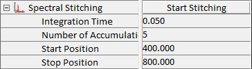

此参数组允许记录具有扩展光谱范围的单光谱。因此，光栅移动到不同的光谱位置以覆盖定义的范围。数据组合为一个光谱。
更多信息（操作指南）：

开始拼接
按下此按钮，将使用当前参数开始采集。
积分时间
此参数定义每个光谱位置的积分时间。
累积次数
此参数描述每个光谱位置将累积多少个光谱。
起始位置
定义结果光谱的光谱范围的起始位置，使用 光谱仪 部分中定义的光谱单位。
停止位置
定义结果光谱的光谱范围的终止位置，使用 光谱仪 部分中定义的光谱单位。